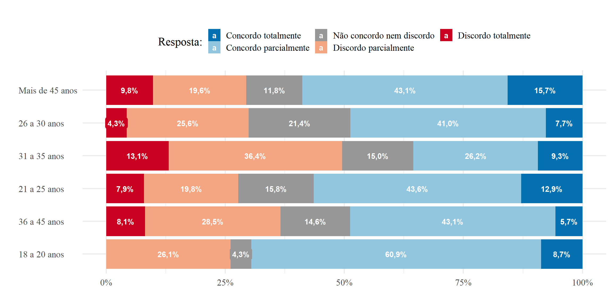

Capítulo 4 Questões versus Cortes
knitr::opts_chunk$set(
echo = FALSE,
message = FALSE,
error = FALSE,
warning = FALSE,
fig.width = 12
)4.1 Questão 9
- Os colaboradores são preparados de maneira adequada para atuar com excelência em seus projetos e/ou áreas. [->]
4.1.1 1. Eu sou:

|
|
Total | ||
|---|---|---|---|---|
| Colaborador | LÃder de equipe | LÃder de lÃder | ||
| Discordo totalmente | 33 | 7 | 2 | 42 |
| Discordo parcialmente | 111 | 17 | 12 | 140 |
| Não concordo nem discordo | 71 | 8 | 3 | 82 |
| Concordo parcialmente | 181 | 20 | 8 | 209 |
| Concordo totalmente | 49 | 0 | 0 | 49 |
| Total | 445 | 52 | 25 | 522 | χ2=16.748 · df=8 · Cramer’s V=0.127 · Fisher’s p=0.017 |
4.1.2 2. Área:

|
|
Total | |||||||||||
|---|---|---|---|---|---|---|---|---|---|---|---|---|---|
| BUs | Consulting | Financeiro/Administrativo/TI/CIG | GO e Controle de Qualidade | Kernel | Marketing | MS | Novos Negócios e Parcerias | Pessoas | PMS | QTS | Segurança & Cloud | ||
| Discordo totalmente | 1 | 2 | 3 | 5 | 1 | 0 | 1 | 1 | 1 | 6 | 21 | 0 | 42 |
| Discordo parcialmente | 6 | 8 | 10 | 15 | 3 | 0 | 13 | 1 | 2 | 17 | 63 | 2 | 140 |
| Não concordo nem discordo | 4 | 10 | 10 | 3 | 1 | 1 | 3 | 0 | 2 | 10 | 37 | 1 | 82 |
| Concordo parcialmente | 6 | 25 | 22 | 16 | 3 | 0 | 15 | 3 | 7 | 20 | 89 | 3 | 209 |
| Concordo totalmente | 0 | 12 | 5 | 1 | 1 | 0 | 7 | 0 | 2 | 2 | 18 | 1 | 49 |
| Total | 17 | 57 | 50 | 40 | 9 | 1 | 39 | 5 | 14 | 55 | 228 | 7 | 522 | χ2=46.765 · df=44 · Cramer’s V=0.150 · Fisher’s p=0.271 |
4.1.3 3. Gênero:

|
|
Total | ||
|---|---|---|---|---|
| Feminino | Masculino | Prefiro não identificar | ||
| Discordo totalmente | 13 | 25 | 4 | 42 |
| Discordo parcialmente | 34 | 101 | 5 | 140 |
| Não concordo nem discordo | 17 | 63 | 2 | 82 |
| Concordo parcialmente | 66 | 137 | 6 | 209 |
| Concordo totalmente | 14 | 34 | 1 | 49 |
| Total | 144 | 360 | 18 | 522 | χ2=10.413 · df=8 · Cramer’s V=0.100 · Fisher’s p=0.280 |
4.1.4 4. Tempo de Empresa (há quanto tempo trabalha na Inmetrics?)

|
|
Total | |||||
|---|---|---|---|---|---|---|---|
| 1 a 2 anos | 2 a 4 anos | 4 a 7 anos | 6 meses a 1 ano | Mais de 7 anos | Menos de 6 meses | ||
| Discordo totalmente | 4 | 13 | 7 | 13 | 1 | 4 | 42 |
| Discordo parcialmente | 20 | 46 | 19 | 34 | 9 | 12 | 140 |
| Não concordo nem discordo | 9 | 16 | 4 | 22 | 7 | 24 | 82 |
| Concordo parcialmente | 30 | 53 | 15 | 64 | 7 | 40 | 209 |
| Concordo totalmente | 8 | 9 | 1 | 12 | 0 | 19 | 49 |
| Total | 71 | 137 | 46 | 145 | 24 | 99 | 522 | χ2=51.291 · df=20 · Cramer’s V=0.157 · Fisher’s p=0.000 |
4.1.5 5. Faixa etária:

|
|
Total | |||||
|---|---|---|---|---|---|---|---|
| 18 a 20 anos | 21 a 25 anos | 26 a 30 anos | 31 a 35 anos | 36 a 45 anos | Mais de 45 anos | ||
| Discordo totalmente | 0 | 8 | 5 | 14 | 10 | 5 | 42 |
| Discordo parcialmente | 6 | 20 | 30 | 39 | 35 | 10 | 140 |
| Não concordo nem discordo | 1 | 16 | 25 | 16 | 18 | 6 | 82 |
| Concordo parcialmente | 14 | 44 | 48 | 28 | 53 | 22 | 209 |
| Concordo totalmente | 2 | 13 | 9 | 10 | 7 | 8 | 49 |
| Total | 23 | 101 | 117 | 107 | 123 | 51 | 522 | χ2=33.142 · df=20 · Cramer’s V=0.126 · Fisher’s p=0.036 |
4.1.6 6. Alocação:

|
|
Total | ||
|---|---|---|---|---|
| Alocado no cliente | No Canopus | No Thera | ||
| Discordo totalmente | 26 | 13 | 3 | 42 |
| Discordo parcialmente | 74 | 59 | 7 | 140 |
| Não concordo nem discordo | 42 | 31 | 9 | 82 |
| Concordo parcialmente | 123 | 75 | 11 | 209 |
| Concordo totalmente | 23 | 23 | 3 | 49 |
| Total | 288 | 201 | 33 | 522 | χ2=7.834 · df=8 · Cramer’s V=0.087 · Fisher’s p=0.455 |